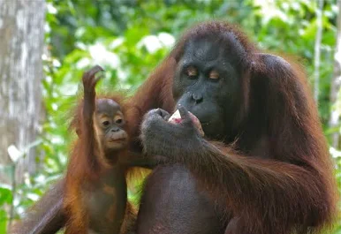
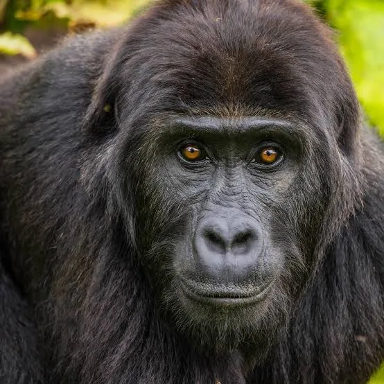
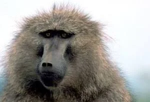
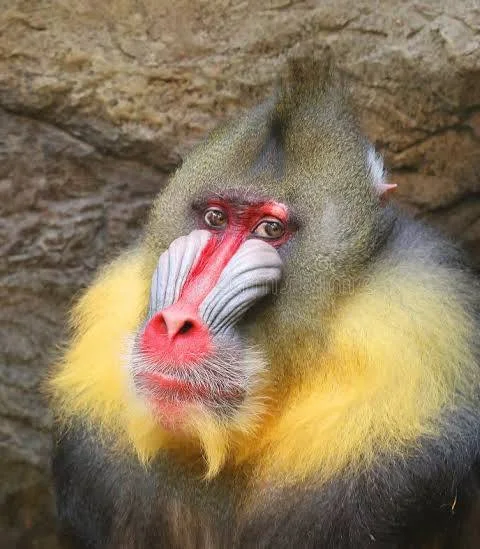

ორანგუტანი
სხეულის სიგრძე 1,2–1,5 (იშვიათად 1,8-მდე) მეტრია. მასა დედლისა — 30-50, მამლისა — 50–90 კგ (ტყვეობაში 140 კგ-მდე და მეტი). დღეს მცხოვრები მეხეური ცხოველებიდან ყველაზე დიდებია. წინა კიდურები მიწაზე მცხოვრებ სხვა ადამიანის მსგავს მაიმუნებზე გრძელი აქვთ (ჩამოშვებულ მდგომარეობაში კოჭამდეა), უკანები მოკლეა; განირჩევიან აგრეთვე მოწითალო-ყავისფერი შეფერილობის ბეწვით. თმის საფარი თხელია, თავსა და მხრებზე გრძელი თმებით წარმოქმნილი ფაფარია. ზრდასრულ მამლებს ულვაშები და წვერი აქვთ.
გორილა
Gorillas are large, primarily herbivorous,[1] great apes that live in the tropical forests of equatorial Africa. The genus Gorilla is divided into two species: the eastern gorilla and the western gorilla, and either four or five subspecies. The DNA of gorillas is highly similar to that of humans, from 96 to 99% depending on what is included, and they are the next closest living relatives to humans after the bonobos and chimpanzees.Gorillas are the largest living primates, reaching heights between 1.25 and 1.8 m (4 ft 1 in and 5 ft 11 in), weights between 100 and 270 kg (220 and 600 lb), and arm spans up to 2.6 m (8 ft 6 in), depending on species and sex. They tend to live in troops, with the leader being called a silverback. The eastern gorilla is distinguished from the western by darker fur colour and some other minor morphological differences. Gorillas tend to live 35–40 years in the wild.
ბაბუინი
ბაბუინი (Papio cynocephalus) — მაიმუნი ანთრისებრთა ოჯახისა. სხეულის სიგრძე საშუალოდ 75 სმ, კუდისა — 60 სმ-მდე. ბალანი მოყვითალოა. გავრცელებულია ცენტრალურ და აღმოსავლეთ აფრიკაში. იკვებება მცენარეებითა და პატარა ცხოველებით. ზოგან დიდ ზიანს აყენებს სასოფლო-სამეურნეო კულტურებს. ხშირად ჰყავთ ზოოპარკებსა და სამხეცეებში.
შიმპანზე
შიმპანზე (Pan) — ადამიანის მსგავსი მაიმუნების გვარი. შიმპანზეები არიან ორი აფრიკული სახეობიდან ერთ-ერთი უდიდესი მაიმუნები, რომლებიც არ გადაშენებულან. თავდაპირველად Pan გვარში გაერთიანებულები, ერთ სახეობად ითვლებოდნენ. თუმცა, 1928 წლიდან ისინი მიიჩნევიან ორ განსხვავებულ სახეობად: ჩვეულებრივ შიმპანზედ (P. Troglodytes), რომელიც მდინარე კონგოს ჩრდილოეთით ცხოვრობს და ჯუჯა-ბონობოდ (P. Paniscus), რომელიც სამხრეთში ცხოვრობს.[1] P. Troglodytes თავის მხრივ ოთხ ქვესახეობად იყოფა. ისინი დაახლოებით მილიონი წლის წინ გაიყარნენ. ყველაზე აშკარა განსხვავება არის ის, რომ შიმპანზეები უფრო დიდები, აგრესიულები არიან, მამრები დომინანტები, ხოლო ბონობო უფრო მშვიდია და მდედრები არიან დომინანტები. შიმპანზეს სახეობა მშობლიურ სამკვიდროში დასავლეთ და ცენტრალურ აფრიკაში ბინადრობს.[2]

მანდრილი
მანდრილი (Mandrillus) — უმდაბლესი ცხვირვიწრო მაიმუნების გვარი ანთრისებრთა ოჯახისა. მამლის სხეულის სიგრძე 70-80 სმ, მასა 20 კგ აღწევს. დედალი მამალზე პატარაა. მანდრილის წინა კიდურები უკანაზე გრძელია. აქვს დიდი თავი, წინ წამოწეული ფართო სახე. გვარში 2 სახეობაა: ჩვეულებრივი მანდრილი (Mandrillus sphinx) და დრილი. ჩვეულებრივ მანდრილს კაშკაშა შეფერილობა აქვს. მამალს ღია წითელი ცხვირი აქვს, ლოყის გასწვრივ ნაოჭიანი პრიალა ლურჯი ლილვაკები გასდევს. მანდრილი გავრცელებულია დასავლეთ აფრიკაში, ტენიან და კლდოვან ტყეში. უმეტეს დროს მიწაზე ატარებს, მაგრამ ხეზე სძინავს და იკვებება. ნაირჭამიაა. მძვინვარე, აგრესიული ცხოველია. მაკეობა 8 თვემდე გრძელდება.
